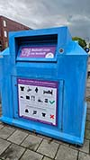

In Amsterdam zijn textielbakken een alledaags gezicht geworden, verspreid door de stad als onderdeel van een groeiende inspanning om textielafval te verminderen. Deze bakken bieden inwoners en bezoekers een gemakkelijke manier om kleding en stoffen te recyclen, waardoor Amsterdam een stap dichter bij haar doel komt om een duurzamere en milieuvriendelijkere stad te worden.
